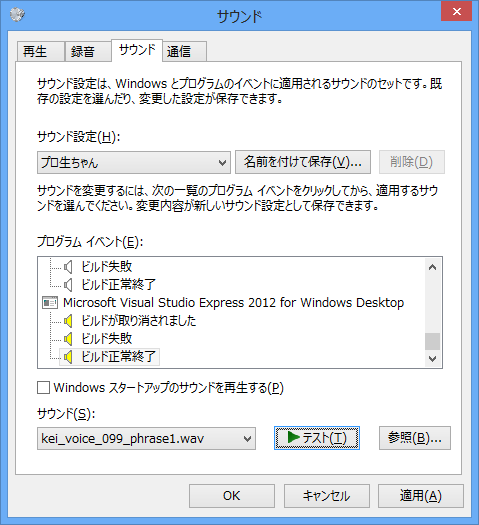
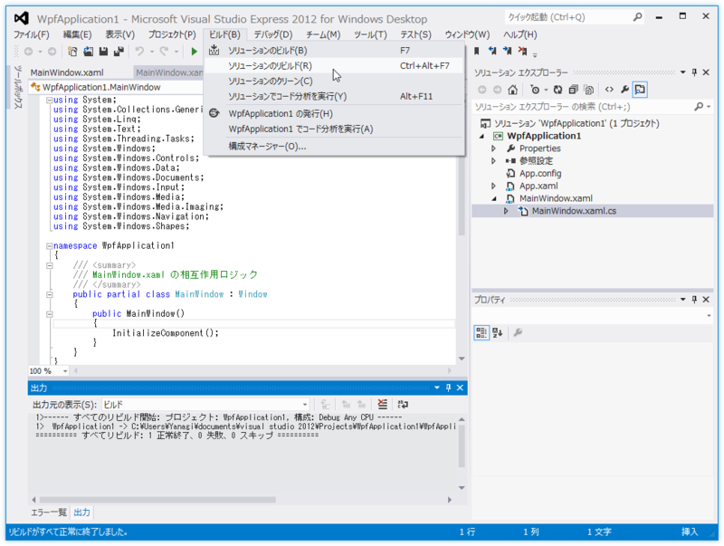

プロ生ちゃんのボイスで Visual Studio のビルド通知を行う
公開日：
というわけで、この度、IT系コミュニティ「プログラミング生放送」のキャラクター、プロ生ちゃんこと暮井 慧（くれい けい）のシステムボイスを無償公開します！ PC やスマホの一般的なサウンド設定、そして Visual Studio など開発用ツールのサウンド設定としても使える内容です。
プロ生ちゃん（CV: 上坂すみれ（https://twitter.com/Uesakasumire）さん）のシステムボイスが公開されました！ 個人的にちょっと面白いなぁと思ったのは、「Visual Studio」用のサウンドが用意されていること。これを使うと、プロ生ちゃんがビルド通知してくれるようになるっぽい。
使い方
「Visual Studio 2012」*1がインストールされている環境で［サウンド］プロパティ画面の［サウンド］タブを開くと、“プログラム イベント”リストの下の方に Visual Studio のイベントが登録されているはず。

Express エディションでもいいみたい。ここにサウンド（WAVファイル）を割り当てるだけ。うちの環境では
- ビルドが取り消されました
- ビルド失敗
- ビルド正常終了
という3つのイベントが登録されてた。これはエディションによって少し差異があるみたい。たとえば、上位エディションではブレークポイントでもイベントが発生する。
注意

配布されているシステムサウンドは長すぎるのかな？ うちの環境ではそのままでは使えなかった。なので“cut”フォルダに収められた短いセリフ（MP3形式）を「foober2000」で WAV 形式に変換して使っています（追記：現在は“cut”フォルダ内のサウンドも WAV 形式になっています）。
あと Visual Studio はシステムサウンドを設定した後に起動しなきゃいけないみたい。起動したままサウンド設定を行ったのだけど、ビルドしても音声が再生されず「なんでや」と思った次第。
*1:「Visual Studio 2008」まではおそらくないと思う。「Visual Studio 2010」は未検証